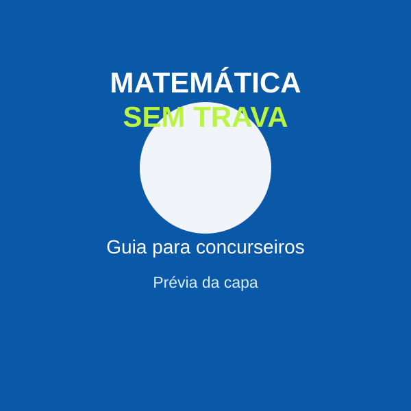
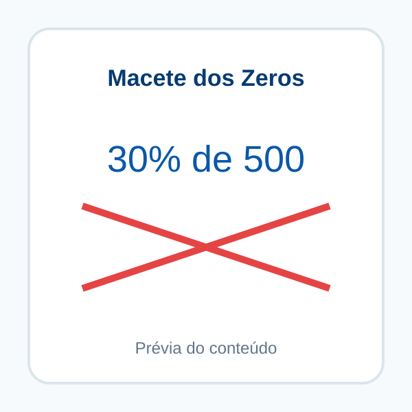
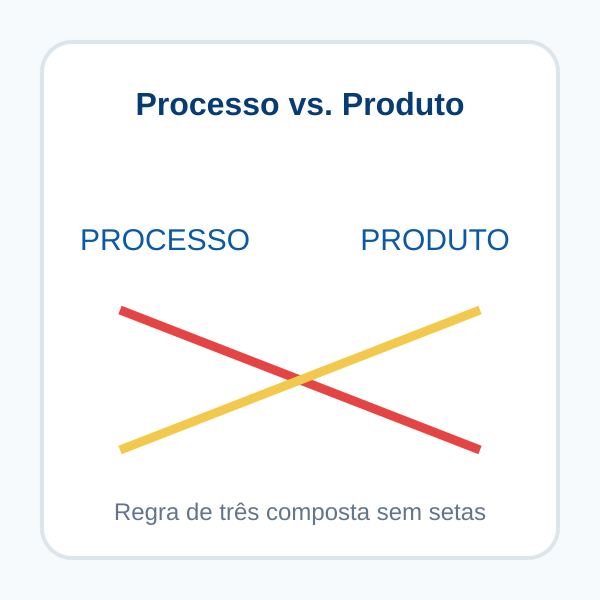
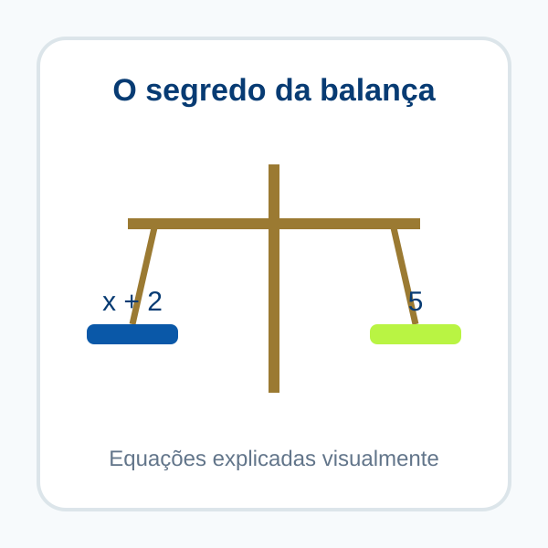
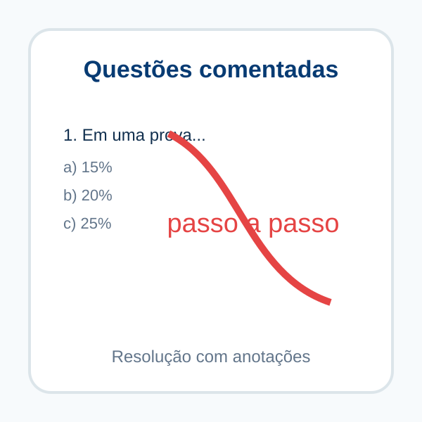

Você não é ruim em matemática. Você só foi ensinado do jeito errado.
Pare de travar nas questões de matemática que podem decidir a sua aprovação.
Um método prático e direto ao ponto, criado por uma professora com 9 anos de experiência, para você dominar Porcentagem, Regra de Três e Equações de 1º Grau — conteúdos essenciais para quem está se preparando para concursos.
Sem fórmulas intermináveis. Sem teoria desnecessária. Mesmo que matemática sempre tenha sido o seu maior medo.
✓ Guia em PDF • ✓ Acesso imediato • ✓ Leitura no celular
9 ANOS ENSINANDO MATEMÁTICA
SE ISSO ACONTECE COM VOCÊ...
Você se identifica com alguma dessas situações?
❌
Olha para a questão de exatas na prova e dá um “branco” instantâneo.
❌
Tenta estudar por apostilas teóricas gigantes e sente que está lendo outra língua.
❌
Perde minutos preciosos tentando montar regras de três enormes e erra no final por detalhe.
❌
Já deixou de fazer ou travou em um concurso porque tinha matemática no edital.
A culpa não é sua.
O ensino tradicional muitas vezes te empurra para decorar fórmulas antes de entender o processo. Na hora da prova, o nervosismo bate e a fórmula some.
Você não precisa estudar um livro inteiro de matemática. Precisa de um caminho focado, prático e visual.
QUEM VAI TE GUIAR
Muito prazer, eu sou a professora Fernanda Soares Rodrigues.
Sou professora de matemática há 9 anos, licenciada e pós-graduada. Ao longo dessa jornada, já estive em salas de aula com crianças, adolescentes, adultos e universitários.
Essa experiência me mostrou onde os alunos costumam travar. Minha didática foi lapidada no dia a dia, ensinando quem tinha pavor da disciplina a encontrar um caminho mais simples.
Aqui, matemática é levada a sério — sem complicações desnecessárias.
POR DENTRO DO GUIA
O que você vai encontrar dentro do Matemática Sem Trava
01
%
Porcentagem Rápida
Atalhos visuais, incluindo o Macete dos Zeros, para encurtar o caminho da resolução.
02
↗
Regra de Três Composta
O método prático Processo vs. Produto para organizar a questão sem a confusão das setas.
03
x
Equações do 1º Grau
Passo a passo para interpretar o enunciado e transformar o português em matemática.
📝 Passo a passo comentadoResoluções detalhadas, mostrando como pensar.
🎨 Anotações e dicas visuaisMarcações que deixam o raciocínio mais claro.
⚡ Macetes práticosTécnicas para ganhar tempo e reduzir a confusão.
🎯 Questões de bancasExercícios de VUNESP, FGV, IBFC, FCC e outras.
VEJA POR DENTRO
Não é só teoria. Você vê o raciocínio acontecendo.
Páginas do material que você recebe.

Capa do guiaO manual de sobrevivência para concurseiros que odeiam exatas.

Macete dos ZerosPorcentagem com raciocínio visual.

Processo vs. ProdutoRegra de três composta sem setas.

Segredo da BalançaEquações explicadas de forma visual.

Questões comentadasResolução passo a passo com anotações.
PARA QUEM É
Este guia foi feito para quem...
✓ Precisa passar em concursos, mas sente pavor da prova de exatas.
✓ Quer focar direto no que interessa e não tem tempo para teorias gigantes.
✓ Quer aprender técnicas visuais que ajudam a economizar tempo na prova.
OFERTA DE LANÇAMENTO
Um método construído em 9 anos de carreira por menos do que o valor de uma pizza.
De R$ 97,00 por apenas
R$ 39,90
ou em até 4x no cartão*
📩 Acesso imediato e vitalício ao e-book em PDF
🎯 Porcentagem, Regra de Três e Equações do 1º Grau
📱 Leitura no celular, tablet ou computador
🎁 Bônus: questões de concursos comentadas passo a passo
*Condição de parcelamento sujeita à configuração final do checkout.
🔒
Compra 100% segura e acesso imediato
Assim que o pagamento for confirmado, o Guia Matemática Sem Trava será enviado para o e-mail informado na compra.
DÚVIDAS FREQUENTES
Perguntas frequentes
O guia é físico ou digital?
É um e-book em PDF. Você poderá acessar pelo celular, tablet ou computador.
Preciso saber matemática para começar?
Não. O material foi pensado para quem trava justamente nos conteúdos básicos e quer entender o processo de forma visual.
Quais conteúdos estão incluídos?
Desbloqueio da mente concurseira, porcentagem, regra de três composta, equações do 1º grau e questões comentadas.
Por quanto tempo tenho acesso?
O acesso ao arquivo é vitalício após a compra.
Como recebo o guia?
Após a confirmação do pagamento, o PDF será enviado ao e-mail informado no checkout.
Guia completoR$ 39,90
O checkout ainda está sendo configurado. A compra será habilitada em breve.